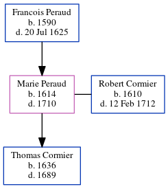

Marie Cormier (née Peraud) 1614 - 1710
[ Home ] | [ Calendar ] | [ Surnames Index ] | [ Census Index ] | [ Family History ]The child of Francois Peraud, Marie Peraud, the 10 times great-grandmother of Michele Copp (née Phillips), was born in La Rochelle, Manche, Basse-Normandie, France in 16141 and married Robert Cormier (with whom she had 1 child, Thomas) in La Rochelle in 16341.
She died in 1710 in Port Royal, , Nova Scotia, Canada.
Parents
- Francois was born in 1590
Children
- Thomas was born in 1636
Citations
- U.S. and International Marriage Records, 1560-1900 Online publication - Provo, UT, USA: The Generations Network, Inc., 2004.Original data - This unique collection of records was extracted from a variety of sources including family group sheets and electronic databases. Originally, the information was deriv
Family Tree
Generated by ged2site. Last updated on Jun 6, 2024